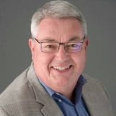

Scott Wilson
President
Scott received BA degrees in Political Science and German from Cal in 1985 and a PhD in Political Science from UC Santa Barbara in 1995. His career has focused on the regulatory and quality requirements of new medical devices, particularly the US and EU approval processes. He recently joined Cala Health, which is studying ways to address chronic disease by stimulating peripheral nerves with body-worn electronics. His earlier ventures include start-ups developing devices for hypertension, heart valve leakage, therapeutic hypothermia and heart failure, as well as work with Medtronic and Edwards Lifesciences. Scott is also a member of the Rotary Club of Walnut Creek.